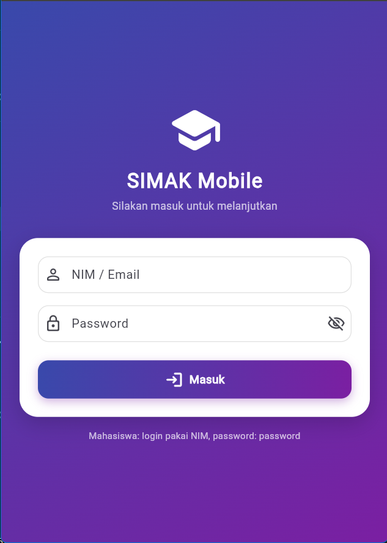
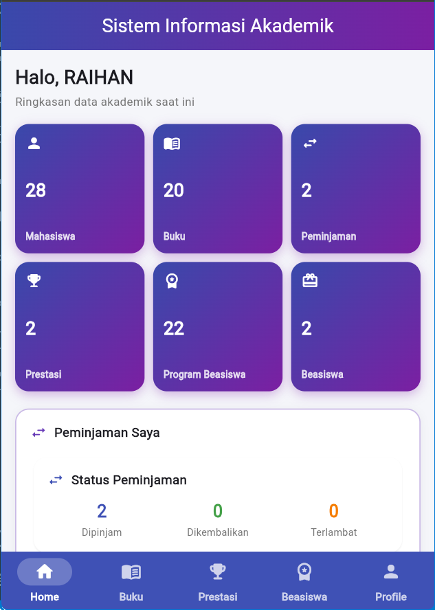
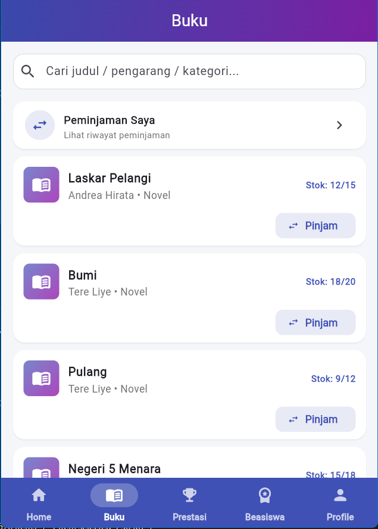
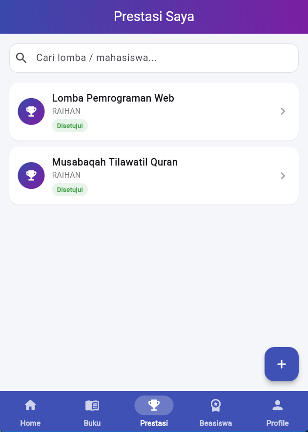
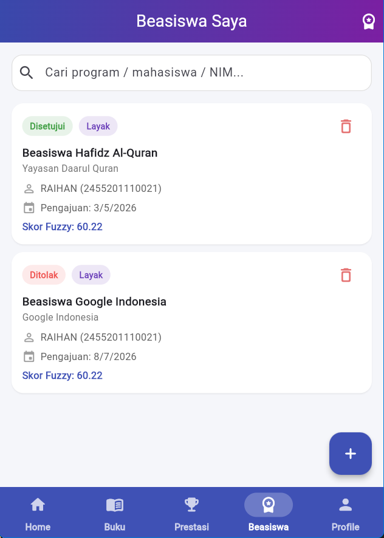
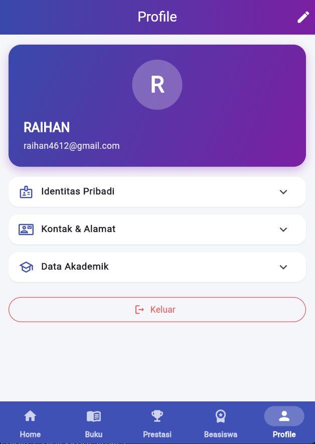

Sistem Informasi Mahasiswa dalam genggaman Anda.
Aplikasi mobile untuk mengakses data akademik, katalog & peminjaman buku perpustakaan, input prestasi, hingga pengajuan beasiswa — kapan saja dan di mana saja. Dibangun dengan Flutter dan Laravel, dilengkapi rekomendasi beasiswa berbasis logika Fuzzy Mamdani.
Jelajahi fitur inti SIMAK Mobile yang dapat Anda gunakan setiap hari.

LoginMasuk dengan NIM/email dan password. Sistem mengenali peran Anda sehingga setiap pengguna hanya melihat menu dan data sesuai hak aksesnya.

DashboardPusat kendali berisi ringkasan data akademik: jumlah buku yang dipinjam, status prestasi, hingga pengajuan beasiswa yang sedang berjalan.

PerpustakaanCari buku dari katalog digital, ajukan peminjaman, dan kembalikan langsung dari aplikasi. Denda keterlambatan dihitung otomatis oleh sistem.

PrestasiCatat prestasi Anda dengan unggah sertifikat. Admin memverifikasi melalui alur Pending → Disetujui/Ditolak lengkap dengan riwayat verifikasi.

BeasiswaAjukan beasiswa dan dapatkan rekomendasi otomatis berbasis logika Fuzzy Mamdani menggunakan IPK serta tingkat prestasi untuk keputusan yang lebih objektif.

ProfilKelola data diri dan keamanan akun Anda — ubah profil, perbarui password, dan pantau peran serta akses yang dimiliki.
Ringkasan latar belakang, tujuan, target pengguna, dan manfaat sistem.
Pengelolaan data akademik sering dilakukan secara manual dan tersebar di beberapa buku register maupun file spreadsheet. Akibatnya data mudah terduplikasi, sulit dicari, dan pemantauan prestasi, peminjaman buku, maupun pengajuan beasiswa menjadi lambat. SIMAK Mobile hadir untuk memusatkan seluruh data dalam satu sistem terintegrasi yang dapat diakses dari perangkat mobile.
Mendigitalisasi pengelolaan data mahasiswa, perpustakaan, prestasi, dan beasiswa; menyediakan akses informasi real-time bagi mahasiswa dan staf; mempercepat proses verifikasi prestasi dan peminjaman buku; serta membantu pengambilan keputusan pemberian beasiswa melalui rekomendasi otomatis berbasis logika fuzzy.
Mahasiswa (melihat data diri, meminjam buku, input prestasi, mengajukan beasiswa), Petugas (mengelola katalog buku dan proses peminjaman/pengembalian), Admin (mengelola seluruh data, verifikasi, hak akses, dan laporan), serta Guest (pengunjung dengan hak baca).
Akses data kapan saja dan di mana saja; transparansi status pengajuan (prestasi/beasiswa); penghematan waktu input manual; pengurangan duplikasi dan kesalahan data; perhitungan denda keterlambatan otomatis; serta keputusan beasiswa yang lebih objektif berkat rekomendasi otomatis.
Fitur unggulan yang membedakan dari sistem manual maupun aplikasi lain.
Perhitungan rekomendasi beasiswa otomatis dengan metode Fuzzy Mamdani berdasarkan IPK dan skor tingkat prestasi (kampus s/d internasional).
Prestasi mahasiswa melewati alur Pending → Disetujui/Ditolak oleh admin, lengkap dengan unggah sertifikat dan riwayat verifikasi.
Catat peminjaman dan pengembalian buku dengan mudah; denda keterlambatan (Rp 1.000/hari) dihitung otomatis dan status terlambat terdeteksi.
Empat level pengguna (Admin, Petugas, Mahasiswa, Guest) dengan izin create/read/update/delete/export yang dapat diatur di modul Hak Akses.
Notifikasi aplikasi untuk pengguna terkait status prestasi, beasiswa, atau peminjaman, dengan penanda belum-dibaca.
Dibangun dengan Flutter untuk pengalaman asli di Android, ditambah antarmuka web admin yang responsif menggunakan Bootstrap 5.
Bagaimana sistem bekerja untuk setiap pengguna, lengkap dengan hak akses dan modul yang tersedia.
| Role | Level | Create | Read | Update | Delete | Export |
|---|---|---|---|---|---|---|
| Admin — akses penuh | 1 | ✓ | ✓ | ✓ | ✓ | ✓ |
| Petugas — operasional | 2 | ✓ | ✓ | ✓ | ✗ | ✓ |
| Mahasiswa — data sendiri | 3 | ✓ | ✓ | ✓* | ✗ | ✗ |
| Guest — hanya baca | 4 | ✗ | ✓ | ✗ | ✗ | ✗ |
* Mahasiswa hanya dapat mengubah/menambah data miliknya sendiri (mis. prestasi). Hak akses diatur dinamis pada modul Hak Akses oleh admin.
Kombinasi teknologi modern untuk frontend, backend, database, hingga deployment.
Provider, Dio, SharedPreferences, Intl, Image Picker, File Picker
Templating Laravel dengan Bootstrap 5 via CDN dan CSS inline
Laravel Sanctum (auth API token), Eloquent ORM, REST API
Relasional dengan indeks, foreign key, dan migrasi
Laragon untuk pengembangan lokal, InfinityFree (shared hosting) untuk produksi
Fuzzifikasi IPK & prestasi, aturan inferensi, dan defuzzifikasi untuk rekomendasi beasiswa
Manajemen dependensi PHP, build aset, dan kontrol versi
Upload via FTP/File Manager, MySQL remote, domain & SSL gratis
Gambaran bagaimana komponen terhubung, relasi antar tabel, serta dokumentasi API.
| Tabel | Deskripsi |
|---|---|
| users | Akun pengguna (admin/petugas/mahasiswa) dengan field role & mahasiswa_id |
| hak_akses | Definisi role dan izin CRUD+export per level |
| mhs | Data mahasiswa (NIM, identitas, prodi, fakultas, semester, IPK) |
| buku | Katalog buku (kode, judul, pengarang, stok, status) |
| petugas | Data petugas perpustakaan |
| peminjaman | Transaksi pinjam/kembali + status & denda |
| jenis_prestasi / tingkat_prestasi | Master jenis dan tingkat prestasi |
| prestasi | Prestasi mahasiswa + status verifikasi + sertifikat |
| verifikasi_prestasi | Riwayat verifikasi oleh admin |
| program_beasiswa | Master program beasiswa |
| beasiswa | Pengajuan beasiswa mahasiswa |
| fuzzy_hasil | Hasil rekomendasi beasiswa per mahasiswa |
| notifications | Notifikasi per pengguna |
| personal_access_tokens | Token API Sanctum |
| Tabel | Relasi | Tabel | Kolom Penghubung |
|---|---|---|---|
| users | 1 → 1 | mhs | users.mahasiswa_id |
| users | 1 → N | hak_akses | users.role = hak_akses.nama_role |
| mhs | 1 → N | peminjaman | mhs.id |
| mhs | 1 → N | prestasi | mhs.id |
| mhs | 1 → N | beasiswa | mhs.id |
| mhs | 1 → 1 | fuzzy_hasil | mhs.id |
| buku | 1 → N | peminjaman | buku.id |
| petugas | 1 → N | peminjaman | petugas.id |
| jenis_prestasi | 1 → N | prestasi | prestasi.jenis_prestasi_id |
| tingkat_prestasi | 1 → N | prestasi | prestasi.tingkat_prestasi_id |
| prestasi | 1 → 1 | verifikasi_prestasi | prestasi.id |
| users | 1 → N | verifikasi_prestasi | users.id (admin_id) |
| program_beasiswa | 1 → N | beasiswa | program_beasiswa.id |
| users | 1 → N | notifications | users.id (user_id) |
| Metode | Endpoint | Deskripsi |
|---|---|---|
| POST | /api/login | Login dengan NIM/email + password, mengembalikan token Bearer |
| POST | /api/logout | Mengakhiri sesi & menghapus token |
| GET | /api/dashboard | Statistik dashboard (data disaring per role) |
| GET/POST | /api/mahasiswa | Daftar / tambah mahasiswa |
| GET/PUT/DELETE | /api/mahasiswa/{id} | Detail / ubah / hapus mahasiswa |
| GET/POST | /api/buku | Daftar / tambah buku |
| GET/PUT/DELETE | /api/buku/{id} | Detail / ubah / hapus buku |
| GET/POST | /api/peminjaman | Daftar / tambah peminjaman |
| GET/PUT/DELETE | /api/peminjaman/{id} | Detail / ubah / hapus peminjaman |
| POST | /api/peminjaman/{id}/pengembalian | Proses pengembalian buku & hitung denda |
| GET/POST | /api/prestasi | Daftar / tambah prestasi (dengan sertifikat) |
| POST | /api/prestasi/{id}/verifikasi | Verifikasi prestasi (Setujui/Tolak) |
| GET/POST | /api/beasiswa | Daftar / tambah pengajuan beasiswa |
| POST | /api/beasiswa/hitung-rekomendasi | Jalankan rekomendasi Fuzzy Mamdani |
| CRUD | /api/petugas, /api/hak-akses, /api/jenis-prestasi, /api/tingkat-prestasi, /api/program-beasiswa | Modul manajemen pendukung |
Seluruh endpoint (kecuali /api/login) dilindungi middleware auth:sanctum dan membutuhkan header Authorization: Bearer <token>. Respons mengikuti pola JSON (termasuk paginasi 20 data/halaman).
Dari pemasangan aplikasi di HP Android hingga setup server backend.
praktikum24 lalu jalankan composer install..env.example menjadi .env dan sesuaikan konfigurasi database.php artisan key:generate.php artisan migrate --seed untuk tabel + data awal.php artisan serve (default port 8000) dan pastikan API merespons.flutter build apk --release (tambahkan --dart-define=API_URL=... untuk alamat server).Detail persyaratan perangkat, aspek keamanan, dan strategi performa.
Aplikasi: Android 8.0+, RAM 2 GB, ruang 100 MB, koneksi internet.
Server: PHP 8.3+, MySQL, Apache/Nginx, kompatibel shared hosting (InfinityFree).
Pengembangan: Flutter SDK 3.x, Composer, Node.js (opsional untuk build aset).
Autentikasi token Laravel Sanctum (Bearer token); password di-hash bcrypt;
validasi request di sisi server; kontrol akses berbasis peran (RBAC) dengan middleware admin;
pembatasan data per pengguna (mahasiswa hanya melihat datanya sendiri); proteksi file unggahan;
komunikasi via HTTPS; dan berkas sensitif (.env) tidak terekspos publik.
Paginasi (20 data/halaman) agar respons cepat; eager loading relasi untuk menghindari N+1;
indeks & foreign key pada kolom relasi; autoloader teroptimasi (--optimize-autoloader);
cache & queue berbasis database untuk operasi ringan; tampilan web memakai CDN untuk mengurangi beban server.
Perbandingan proses manual dengan penggunaan sistem terdigitalisasi.
Jawaban singkat untuk pertanyaan umum seputar SIMAK Mobile.
password.admin@simak.com / admin123. Petugas: petugas@simak.com / petugas123. Mahasiswa: login pakai NIM dengan password password.API_URL) pada build aplikasi mengarah ke server yang benar. Jika server dalam mode pengembangan di komputer Anda, pastikan php artisan serve berjalan.Untuk bantuan, saran, atau laporan kendala, silakan hubungi tim SIMAK.